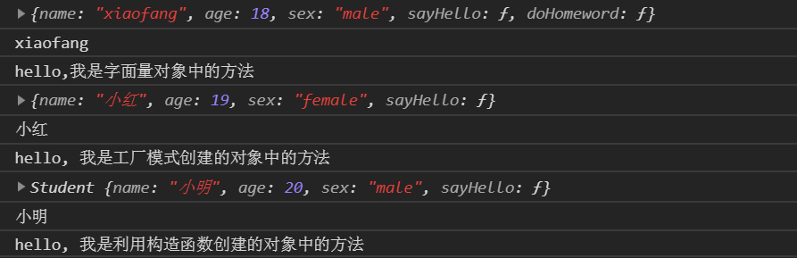

1.函数声明
function calSum1(num1, num2) {
return num1 + num2;
}
console.log(calSum1(10, 10));2.函数表达式
var calSum2 = function (num1, num2) {
return num1 + num2;
}
console.log(calSum2(10, 20));3.函数对象方式
var calSum3 = new Function('num1', 'num2', 'return num1 + num2');
console.log(calSum3(10, 30));1.字面量方式
var Student1 = {
name: 'xiaofang', // 对象中的属性
age: 18,
sex: 'male',
sayHello: function () {
console.log('hello,我是字面量对象中的方法');
},
doHomeword: function () {
console.log("我正在做作业");
}
};
console.log(Student1);
console.log(Student1.name);
Student1.sayHello();2.工厂模式创建对象
function createStudent(name, age, sex) {
var Student = new Object();
Student.name = name;
Student.age = age;
Student.sex = sex;
Student.sayHello = function () {
console.log("hello, 我是工厂模式创建的对象中的方法");
}
return Student;
}
var student2 = createStudent('小红', 19, 'female');
console.log(student2);
console.log(student2.name);
student2.sayHello();3.利用构造函数创建对象（常用）
function Student (name, age, sex) {
this.name = name;
this.age = age;
this.sex = sex;
this.sayHello = function () {
console.log("hello, 我是利用构造函数创建的对象中的方法");
}
}
var student3 = new Student('小明', 20, 'male');
console.log(student3);
console.log(student3.name);
student3.sayHello();对象代码运行结果
